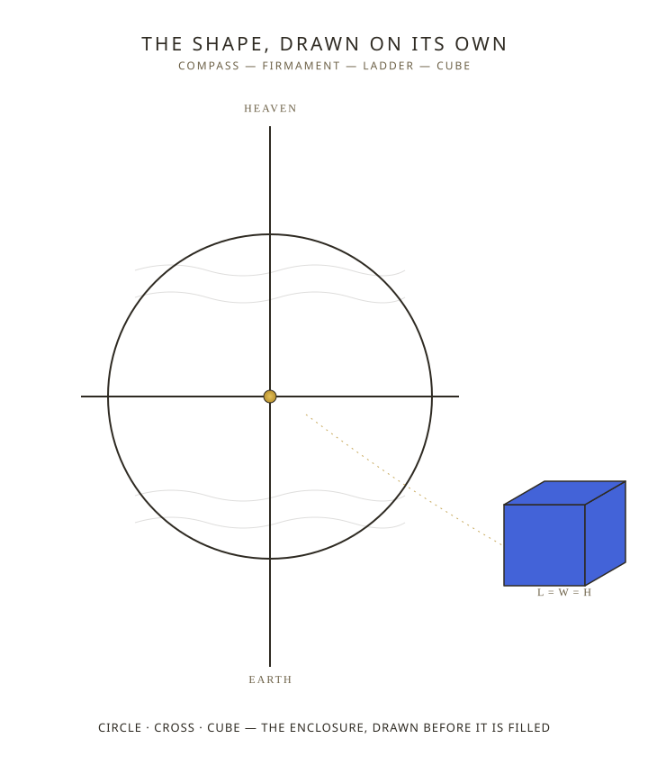

A shape recurs across the Genesis narrative and the passages that draw directly on its vocabulary: a circle traced on formless water, a solid plane splitting waters above from waters below, a weighted cord held against a standing wall, a reed walking off room after room of a building not yet finished. These are not stray images. Each one appears at the exact moment an enclosure is being fixed — the boundary of the deep, the divide of the firmament, the dimensions of a dwelling, the perimeter of a city. The record's own first pairing, heaven and earth (Genesis 1:1), is already this shape stated in two words before any instrument is drawn: a boundary, and the ground it encloses. Elohim, the judges and rulers, does not enclose by accident or by growth left to itself. It encloses by measurement, drawn and held before the form exists. The court's instrument is the line.
The Compass on the Deep — Genesis Day One
When he made ready the heavens I was there: when he put an arch over the face of the deep: — Proverbs 8:27
Before there is light, before there is dry land, wisdom is present as the court draws a compass upon the face of the deep — Hebrew chuwg (H2329), to trace a circle. This is Genesis 1:2, the deep still formless and dark, nothing yet separated. But the boundary is already being drawn. The court does not wait for form to arrive before it is measured; the measurement comes first, and the form is what arrives to fill it. This is Ask, Believe, Receive running at the very opening of the creation story: the circle is set on the water before there is a shore to hold it.
The same instrument, the same root, is named twice more, from two other positions. Job 22:14 places it overhead — chuwg again, the circuit of heaven, walked by the one the court is addressing. Isaiah 40:22 places it beneath the throne — the circle of the earth, with the one enthroned seated above it as its judge. And Job 26:10 names it as a drawn line specifically at the meeting of light and darkness, compassed upon the face of the waters "unto the day and night come to an end" — the same boundary that opened the deep in Genesis 1:2 is here fixed as the very edge where one state stops and the next begins. One compass, drawn once, is read from three positions: from wisdom watching it set, from the one who walks beneath it, and from the seat of judgment above it. The boundary does not change depending on where it is viewed from.
The Firmament — Genesis Day Two
And God said, Let there be a solid arch stretching over the waters, parting the waters from the waters. — Genesis 1:6
Raqia (H7549), from raqa (H7554) — to beat, to hammer out flat, the same verb used of gold hammered into plates. Not a gaseous notion but a beaten, solid plane. On day two Elohim divides the waters above from the waters below with this plane, and it holds — the first enclosure in the record with two named sides and a fixed boundary running between them. Every division that follows in scripture — clean from unclean, sheep from goats, the Fold gathered under one Shepherd — inherits this shape. The court does not merely create a thing; it separates, and the line of separation is itself part of what gets made.
The Ladder and Bethel — The Line Set Upon the Divide
And Jacob had a dream about a ladder that rested on the earth with its top reaching up to heaven, and God's angels were going up and down the ladder. — Genesis 28:12
Sullam (H5551) is a hapax legomenon — the only time this word for a stairway or ladder appears anywhere in the Hebrew Bible, drawn from calal (H5549), to raise up or cast up a way. YHVH, present consciousness in Jacob, has just left a familiar state — his father's house, his brother's territory — and is met by a single vertical line set up on the earth with its top reaching the very plane the firmament fixed on day two. Messengers travel both directions on it, the traffic of enforcement between the identity assumed above and the ground beneath. The place itself already carries the verdict in its name: Bethel (H1008), "house of Elohim" — the location discloses what governs it before Jacob renames the site a second time. This is the patriarch thread running through spatial vocabulary: leaving one state, and being met at the named place by the court's own vertical instrument.
The Plumb Line — The Standard Reapplied as Verdict
This is what he let me see: and I saw the Lord stationed by a wall made straight by a weighted line, and he had a weighted line in his hand. — Amos 7:7
Anak (H594) occurs nowhere else in scripture outside these two verses — a plummet, a weighted cord whose only function is to hang true regardless of what stands beside it. The court is not shown building this wall. It is shown standing beside a wall already built true by this very instrument, holding the same instrument up to it again. The plumb line is not a new standard being introduced; it is the original standard being reapplied as a verdict on what the wall has since become. Where a structure built straight is measured and found no longer straight, the mechanism is the jurisdictional error running through the sin thread — Elohim enforcing exactly what has been presented, after its kind, without negotiation.
The Reed and the Cord — Genesis Day Three Measured
He took me there, and I saw a man, looking like brass, with a linen cord in his hand and a measuring rod: and he was stationed in the doorway. — Ezekiel 40:3
Qaneh (H7070), a measuring reed fixed at six cubits, paired here with a linen cord. The figure Ezekiel meets does not build a dwelling by eye; every gate, every wall's thickness, every chamber is walked off in fixed units before it is occupied — the same instrument that reappears at the far end of scripture in Revelation 21:15-16, a golden reed measuring the new city until its length, its breadth, and its height are declared equal: a cube. The oracle housing the ark in Solomon's temple was already this shape in miniature — twenty cubits, twenty cubits, twenty cubits (1 Kings 6:20), the room where I AM is enthroned measured equal on every side before the larger city ever appears. The line that opened as a circle on the deep completes, at both ends of the record, as a form measured the same in every direction.
The Four Rivers — After Its Kind, Multiplied by Direction
And a river went out of Eden giving water to the garden; and from there it was parted and became four streams. — Genesis 2:10
One unnamed river leaves Eden and becomes four named heads: Pishon (H6376, "dispersive"), Gihon (H1521, "a bursting forth"), Hiddekel (H2313, "rapid" — the Tigris), and Perath (H6578, "rushing, to break forth," commonly glossed "fruitfulness" — the Euphrates). A single source dividing into four fixed directions is the same shape, spatially, as the point-to-cross the ladder draws and the foursquare the golden reed measures — after its kind, multiplicity operating on geography the same way it operates on seed and harvest. The source does not multiply into disorder; it multiplies into four named, bounded directions, and each is given a place-name that discloses its own nature before it ever appears again in the record.
The Wheel Within a Wheel — The Compass Set in Motion
Now when I made a search, I saw four wheels, one wheel side by side with each of the four winged ones... their appearance and their work was as it were a wheel inside a wheel. When they went, they went on their four sides: they were not turned when they went. — Ezekiel 1:15-17
Every instrument so far in this thread is fixed: a boundary drawn once on the deep, a plane hammered flat, a line set at one place, a cord held against one wall. The wheel is the same compass-shape given motion without losing its fixed nature. It moves in any of four directions "and were not turned when they went" — the circle travels, but it does not reorient; the boundary keeps its form regardless of which way the enclosure it accompanies is facing. It moves only as the living ones beside it move (Ezekiel 1:19-21), bound to the throne rather than independent of it. The compass drawn once on the deep and the wheel moving beneath the throne are the same instrument at two different points in the record — one describing the boundary at rest, the other describing the boundary in motion, both governed by the same fixed shape.
The Carpenter — The Instrument-Holder Himself
Is not this the carpenter, the son of Mary... — Mark 6:3
Tekton (G5045) — a craftsman, a builder, one who works fixed tools against raw material to bring it into an exact, pre-decided form. Every figure who has carried an instrument in this thread has stood beside the enclosure holding it: the one with the reed stationed in the doorway in Ezekiel 40:3, the Lord stationed by the wall with the weighted line in Amos 7:7. Here the instrument-holder is named by trade before he is shown building anything symbolic at all — the occupation itself is the record's own word for what every prior figure in this thread has been doing with a compass, a plumb line, or a reed.
The same vocabulary surfaces again at the cornerstone. Psalm 118:22, cited directly in Matthew 21:42 — the stone the builders refused becomes the head of the corner. Pinnah (H6438), a corner or corner-stone, the one stone a builder squares every other measurement against once it is set — a plumb-line function, a fixed standard the rest of the structure is verified against rather than a stone laid and forgotten. And in Matthew 16:18, oikodomeo (G3618), to build a house, is spoken directly: "I will build my church" — the measuring and building vocabulary of the reed and the temple applied to the enclosure still being raised. The carpenter does not step outside this thread to introduce a new image. He is named, by occupation, as the one who has been holding the instrument the whole time.
The Cube — Where Every Line Arrives
And the inmost room was twenty cubits square and twenty cubits high, plated over with clear gold, and he made an altar of cedar-wood, plating it with gold. — 1 Kings 6:20
A circle drawn on formless water, named again as a circuit overhead and a circle underfoot. A plane dividing that water into two named regions. A vertical line set exactly on that plane at a place already named for what governs it. A plumb line reapplying a standard as a verdict. A reed walking a dwelling into existence room by room. A river dividing into four bounded directions. A wheel carrying the same fixed boundary into motion beside the throne. A carpenter named by trade as the instrument-holder himself, squaring a rejected stone into the head of the corner. And at the close of the record, a golden reed measuring a city until its length, its breadth, and its height are declared equal — the same cube the oracle already housed in miniature, now at the scale of everything. Every instrument in this thread does one work: it fixes the enclosure before, or instead of, allowing one to simply emerge on its own. The vocabulary was set on the days of creation. The compass and the reed run every thread.